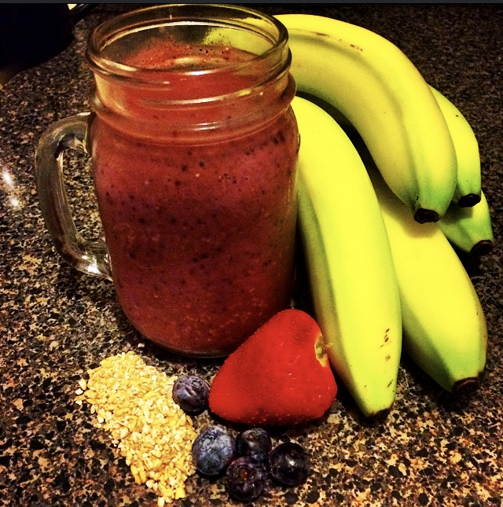

Mom's Smoothie Recipe

Description
My mom's breakfast smoothie is an excellent way to start the day!
This delciious chocolate-y berry smoothie is packed with vitamins and nutrients.
You won't even be able to taste the spinach!
Ingredients
- 1 cup of oat or almond milk
- 1/4 cup of raw steel-cut oats
- 1 banana
- 4 large frozen strawberries
- 1 small handful of frozen bluberries
- 1 small handful of frozen blackberries
- 1 small handful of frozen raspberries
- 1 handful of spinach
- 1 tablespoon of greek yogurt
- 1 tablespoon of flaxseed
- 1 tablespoon of chia seeds
- 1 tablespoon of raw cacao powder
- 1 tablespoon of peanut powder
- 1 dash of nutritional yeast
- A small piece of whole cinammon
Steps
- Combine all ingredients in a blender.
- Blend until smooth and creamy! It may take up to a minute or two.
- Enjoy!